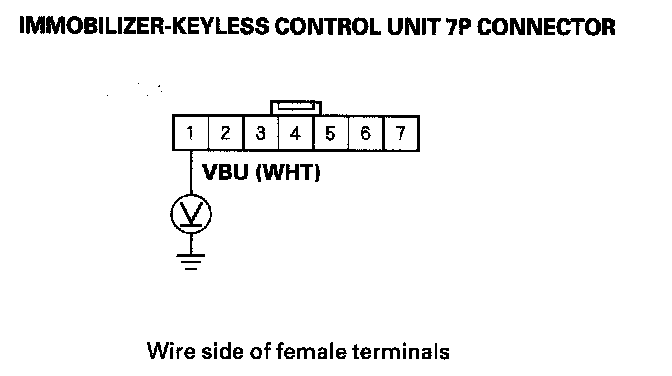
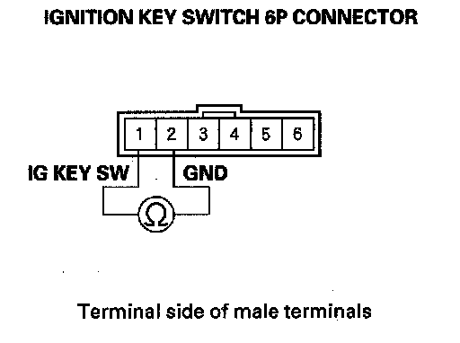
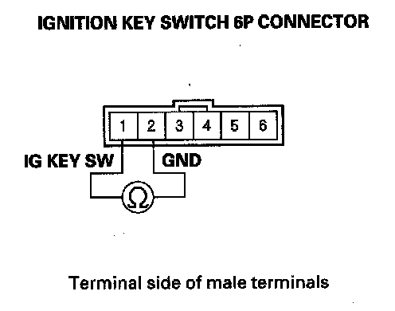
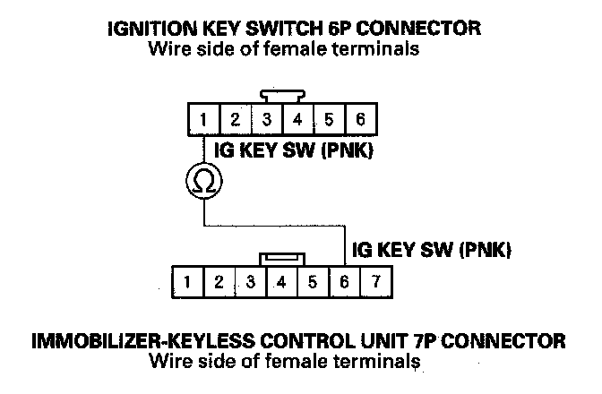
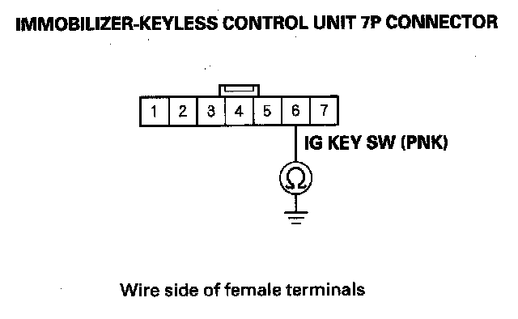

Keyless operation does not work (LOCK, UNLOCK, PANIC)
Keyless operation does not work (LOCK, UNLOCK, PANIC)NOTE:
- Before troubleshooting, check the B-CAN DTCs. If any DTC is indicated, troubleshoot the indicated DTC first.
- Before troubleshooting, do the keyless transmitter test.
1. Turn the ignition switch ON (II).
2. Try to start the engine.
Does the engine start?
YES - The immobilizer system is OK, go to step 3.
NO - Go to the immobilizer symptom troubleshooting.
3. Turn the ignition switch OFF.
4. Connect the HDS to the data link connector.
5. Close all doors, then turn the ignition switch ON (II).
6. Enter the BODY ELECTRICAL menu, and check the door switch parameters.
Do all door switches indicate OFF?
YES - Go to step 7.
NO - Faulty door switch, or shorted door switch wire. Repair as necessary.
7. Remove the ignition key from the ignition switch.

8. Measure for voltage between the immobilizer-keyless control unit 7P connector No. 1 terminal and body ground.
Is there battery voltage?
YES - Go to step 9.
NO - Check the No. 7 (10 A) fuse in the under-dash fuse/relay box. If the fuse is blown, replace the fuse and repair a short to ground in the wire. If the fuse is OK, repair open in the wire.
9. Disconnect the ignition key switch 6P connector.

10. At the ignition key switch side, check for continuity between the ignition key switch 6P connector No. 1 and No. 2 terminals.
Is there continuity?
YES - Faulty ignition key switch or short to ground, replace the steering lock assembly.
NO - Go to step 11.
11. Insert the ignition key into the ignition switch.

12. At the ignition key switch side, check for continuity between the ignition key switch 6P connector No. 1 and No. 2 terminals.
Is there continuity?
YES - Go to step 13.
NO - Faulty ignition key switch, replace the steering lock assembly.
13. Disconnect the immobilizer-keyless control unit 7P connector.

14. Check for continuity between the immobilizer-keyless control unit 7P connector No. 6 terminal and the ignition key switch 6P connector No. 1 terminal.
Is there continuity?
YES - Go to step 15.
NO - Repair open in the wire.

15. Check for continuity between the immobilizer-keyless control unit 7P connector No. 6 terminal and body ground.
Is there continuity?
YES - Repair a short to ground in the wire.
NO - Replace the immobilizer-keyless control unit.